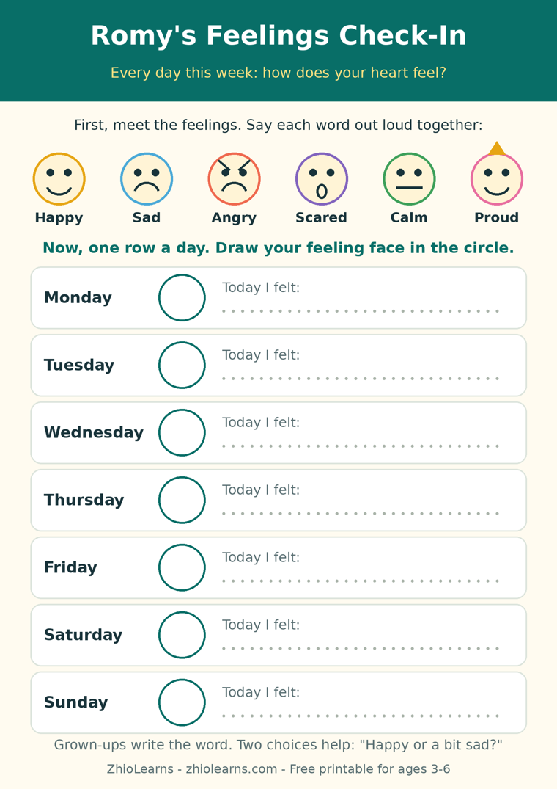

Say What You See: Name the Feeling Before You Fix It
The cup is the wrong colour. Not a different cup, exactly — the same cup, in blue instead of red — and somehow that is enough to bring breakfast to a complete stop. Your child is crying, you are asking “What’s wrong? What happened?”, and the crying only gets louder, because in that moment “what’s wrong?” is genuinely the hardest question in the world.
It is not defiance. A three-, four- or five-year-old in the middle of a big feeling usually cannot explain it, because the feeling arrived at full volume long before the words for it did. Asking for an explanation asks them to do the one thing they cannot do yet. There is an easier first move, and it sounds almost too simple: say what you see.
Narrate first, ask later (or not at all)
Instead of a question, offer a short, plain description of what just happened and what it probably feels like. You are lending your child your words until theirs arrive:
“You wanted the red cup. The red cup is in the dishwasher. That is so disappointing.”
“Your tower fell down right when it got tall. You worked hard on that tower.”
“You did not want to leave the park. Leaving is hard when you are having fun.”
Notice what is missing: no question to answer, no lesson, no solution — yet. Just a name, handed over at the exact moment it is needed. That timing matters. A feeling word learned in a calm vocabulary lesson is information; the same word offered mid-storm is a tool, and tools are what children reach for next time.
Name it first, fix it second
The problem still gets solved. The red cup gets washed, the tower gets rebuilt, the park visit still ends. It just happens one beat later, after your child has felt understood instead of interrogated. In practice, that one beat often shortens the whole storm — a child who has been accurately described usually does not need to escalate to be believed.
Two reassurances for the days it feels clumsy. First, a wrong guess is not a failure. Guess “you’re sad” and get a furious “No! I’m MAD!” — and smile quietly, because your child just named their own feeling, out loud, possibly for the first time. Correcting you is practising. Second, keep it to one short sentence. In a storm, a long explanation is just more weather. You can always add the second sentence once the first one has landed.
From your words to theirs
Over weeks, something shifts. The child who heard “that is so disappointing” at breakfast starts producing “I’m disappointed” at the playground — wobbly, sometimes aimed at the wrong target, but theirs. That is the whole arc of early emotional learning: first we name it for them, then we name it with them, then one ordinary Tuesday they name it themselves and come looking for the solution instead of the storm.
Stories help the middle step. When a character in a book feels frustrated or scared or proud, your child can practise naming feelings at a safe distance — it is Romy’s problem, not theirs — and the words are warm and ready when a real moment needs them.
A forest where every feeling has a name
Romy and the Forest of Feelings, for ages 3–6, was written for exactly this. Romy walks through the forest and meets each feeling along the way — happy, sad, frustrated, scared, proud — and the story gives children names for what happens inside them. Parents tell us they reach for it after a hard drop-off, in a meltdown’s aftermath, or at bedtime when the day needs untangling. Read it once for the story; read it again and pause at each feeling: “Have you felt like that? What did it feel like in your body?”
Then try the free sheet below together on a calm morning — not mid-storm — so the words and the breathing steps are already familiar when a hard moment comes.
🖨️ Free printable: Romy’s Feelings Check-In & Calm Breathing

Meet the feelings faces, draw today’s feeling on a one-week chart, and practise Romy’s three calm steps: name it, breathe with the numbered flower, choose a calm helper. Two pages, ages 3–6, free, no sign-up needed to print it.
Download the free printable (PDF)📚 Today’s book
Find Romy and the Forest of Feelings and Romy’s other books in our little shop — and read Romy’s Alphabet Picnic free in the Storytime section.
See Romy’s books →🌿 More from the Parent Corner
A five-second hand game that helps little ones recognise small groups of things at a glance — no counting required.
See It in a Flash →